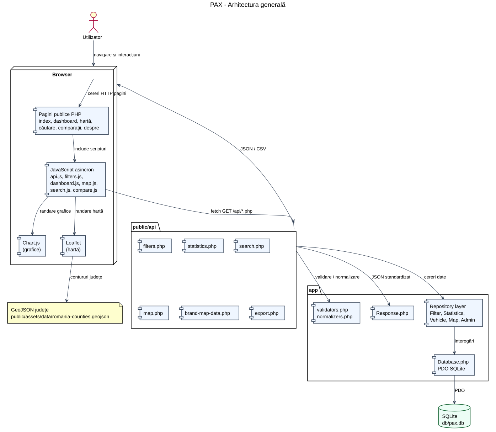
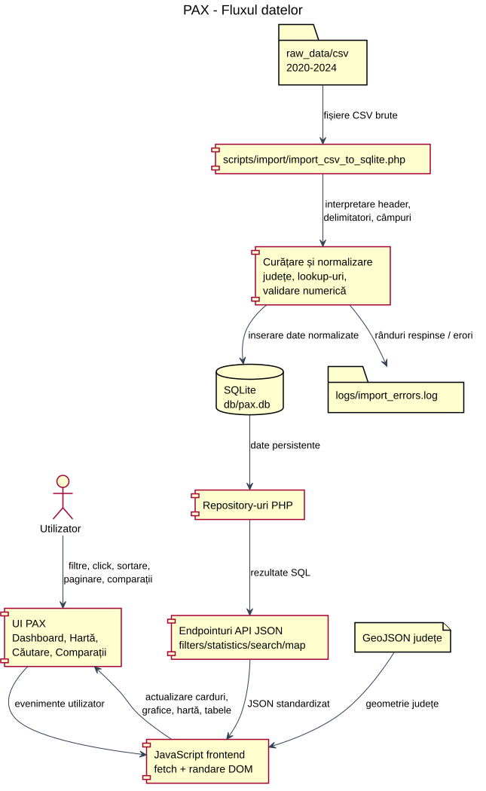
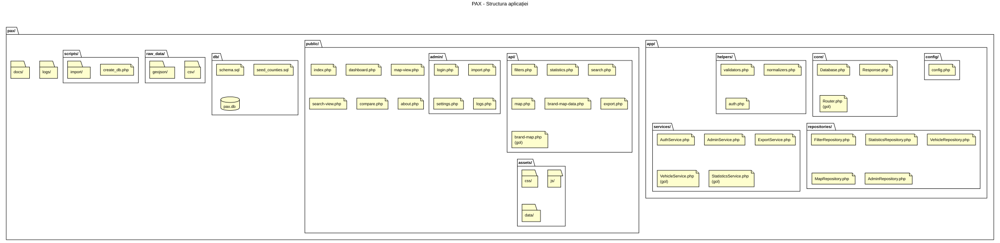
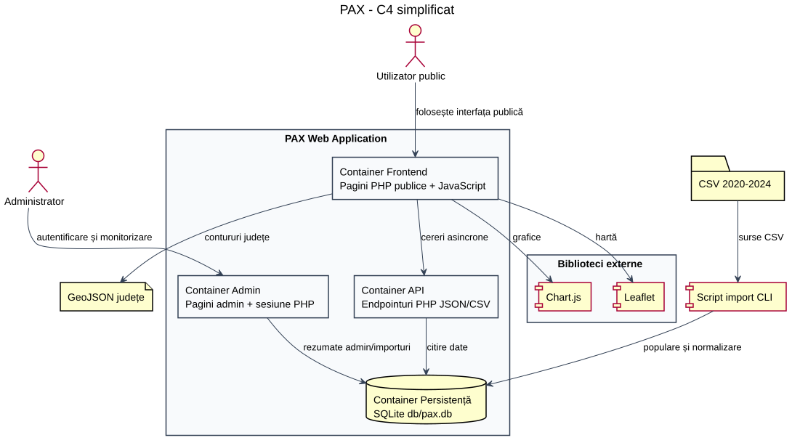
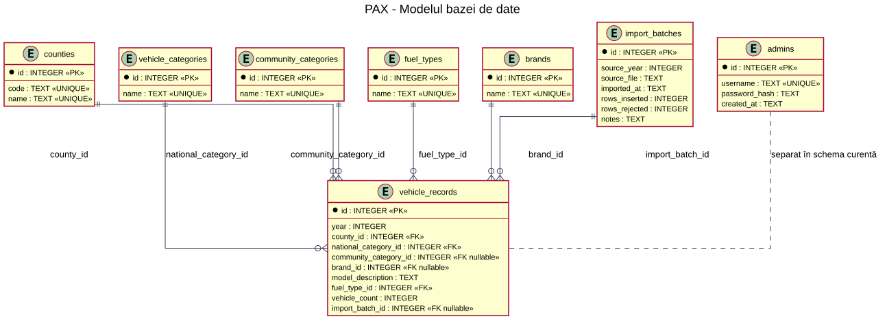

PAX - Platformă web pentru analiza parcului auto din România
Raport în format Scholarly HTML pentru aplicația web PHP + SQLite PAX.
1. Rezumat / Abstract
PAX este o platformă web pentru explorarea și interpretarea datelor despre parcul auto din România pentru perioada 2020-2024. Aplicația preia date brute din fișiere CSV, le normalizează într-o bază SQLite și le expune printr-un set de endpointuri PHP care returnează JSON sau CSV. Interfața publică permite utilizatorului să consulte un dashboard statistic, să filtreze datele, să vizualizeze distribuția geografică pe hartă, să caute înregistrări și să compare două selecții.
Problema principală abordată este dificultatea analizării directe a fișierelor CSV voluminoase. Prin transformarea datelor într-un model relațional, proiectul permite agregări eficiente pe ani, județe, combustibili, mărci, categorii și modele. Din punct de vedere tehnic, aplicația demonstrează o arhitectură simplă, dar coerentă: pagini PHP în directorul public, JavaScript asincron în frontend, endpointuri API, repository-uri pentru acces la date, conexiune PDO și persistență SQLite.
Proiectul are valoare academică deoarece combină procesarea datelor, normalizarea, proiectarea bazei de date, dezvoltarea API-urilor, proiectarea UI și documentarea. El nu este prezentat ca sistem de producție, ci ca aplicație completă pentru înțelegerea unui flux de analiză de date de la fișiere brute până la vizualizări interactive.
2. Introducere
Analiza parcului auto este relevantă pentru înțelegerea evoluției mobilității, a distribuției teritoriale a vehiculelor și a preferințelor tehnice ale utilizatorilor. Datele despre vehicule pot indica schimbări în structura combustibililor, popularitatea mărcilor, concentrarea parcului auto în anumite județe și evoluția pe ani a unor categorii de vehicule.
Fișierele CSV sunt potrivite pentru distribuția datelor, dar nu sunt ideale pentru explorare interactivă. Un utilizator care dorește să compare județe, ani sau mărci trebuie să deschidă fișiere mari, să aplice manual filtre și să agregheze rezultate. PAX reduce această dificultate prin importul datelor într-o bază SQLite și prin expunerea unei interfețe care transformă interogările în vizualizări.
SQLite este adecvat pentru acest proiect deoarece permite stocare locală, nu necesită server de baze de date separat și se integrează direct cu PHP prin PDO. Vizualizările prin dashboard, hartă și tabel de căutare sunt utile deoarece fiecare răspunde unei întrebări diferite: dashboard-ul arată tendințe și distribuții, harta arată variația teritorială, iar căutarea oferă acces la date granular filtrate.
3. Cerințe funcționale
Cerințele funcționale descriu comportamentele concrete oferite de aplicație. În PAX, ele sunt implementate prin pagini PHP, fișiere JavaScript, endpointuri API și repository-uri SQL.
| Cerință | Implementare | Valoare pentru proiect |
|---|---|---|
| Utilizatorul poate accesa pagina principală | `public/index.php`, `public/assets/css/main.css` | Oferă punct de intrare, descrierea aplicației și navigație către module. |
| Utilizatorul poate vizualiza dashboard statistic | `public/dashboard.php`, `public/assets/js/dashboard.js`, `public/api/statistics.php`, `StatisticsRepository.php` | Transformă datele brute în indicatori, grafice și clasamente. |
| Utilizatorul poate filtra după an, județ, categorie, combustibil, marcă | `filters.php`, `FilterRepository.php`, `filters.js`, formularele din dashboard/search/map/compare | Permite analiză contextuală și reduce volumul de date afișat. |
| Utilizatorul poate consulta grafice | `charts.js`, Chart.js din CDN, `dashboard.js`, `compare.js` | Face ușor de interpretat distribuțiile și comparațiile numerice. |
| Utilizatorul poate vedea distribuția pe județe pe hartă | `map-view.php`, `map.js`, Leaflet, GeoJSON, `map.php`, `brand-map-data.php` | Adaugă o perspectivă spațială asupra parcului auto. |
| Utilizatorul poate selecta un județ pe hartă | `map.js` și elementele UI din `map-view.php` | Permite citirea detaliilor pentru județul ales, precum total și marcă predominantă. |
| Utilizatorul poate căuta în date | `search-view.php`, `search.js`, `search.php`, `VehicleRepository.php` | Permite explorarea granulară a înregistrărilor importate. |
| Utilizatorul poate sorta și pagina rezultatele | `validators.php`, `VehicleRepository::search`, `search.js` | Face posibilă navigarea prin rezultate mari fără încărcarea întregului set. |
| Utilizatorul poate compara două selecții | `compare.php`, `compare.js`, `search.php` | Permite analiza diferențelor între două contexte. Implementarea este parțială deoarece folosește primele 100 de rezultate din search. |
| Utilizatorul poate accesa pagina Despre | `public/about.php` | Documentează în interfață scopul și structura generală a proiectului. |
| Administratorul poate accesa modul admin | `public/admin/*.php`, `auth.php`, `AuthService.php`, `AdminService.php` | Permite monitorizarea locală a datelor, importurilor, setărilor și logurilor. |
| Aplicația expune endpointuri API JSON | `public/api/*.php`, `Response.php` | Separă datele de interfață și permite consum asincron. |
| Aplicația validează parametrii primiți | `validators.php` | Reduce erorile și previne valori nepermise pentru ani, paginare, sortare și view-uri. |
| Aplicația citește datele din SQLite | `Database.php`, repository-uri, `db/pax.db` | Oferă persistență locală și interogări relaționale. |
| Aplicația folosește GeoJSON pentru hartă | `public/assets/data/romania-counties.geojson`, `map.js` | Permite desenarea județelor și asocierea datelor agregate cu geometria. |
| Aplicația folosește Chart.js pentru grafice | `charts.js`, `dashboard.php`, `compare.php` | Susține vizualizări interactive și lizibile ale datelor statistice. |
4. Cerințe nefuncționale
Performanța este susținută prin agregări SQL, indexuri pe câmpuri folosite frecvent și paginare în endpointul de căutare. Aplicația nu încarcă toate datele în browser, ci cere doar rezultatele necesare prin API. Pentru hărți și dashboard, backend-ul întoarce date agregate, iar frontend-ul se ocupă de randare.
Organizarea codului urmărește separarea responsabilităților. `public/` expune paginile și endpointurile, `app/repositories/` conține interogări, `app/core/` conține infrastructura comună, iar `app/helpers/` conține validări și normalizări. Această separare face mai ușoară întreținerea și extinderea.
Securitatea de bază este acoperită prin PDO, prepared statements, validarea parametrilor, răspunsuri JSON uniforme și `debug` dezactivat în configurare. Portabilitatea locală este susținută de PHP built-in server și de SQLite. Interfața este lizibilă datorită cardurilor, tabelelor, contrastului ridicat și CSS-ului responsiv.
Extensibilitatea este prezentă la nivel de arhitectură: pot fi adăugate endpointuri noi, view-uri statistice noi sau servicii dedicate. Totuși, unele fișiere (`Router.php`, `VehicleService.php`, `StatisticsService.php`, `brand-map.php`) sunt goale și indică direcții nefinalizate.
5. Arhitectura aplicației
Arhitectura PAX este o arhitectură web clasică, fără framework PHP. Browserul cere pagini PHP din `public/`, iar aceste pagini includ fișiere CSS și JavaScript. După încărcarea paginii, JavaScript-ul folosește `fetch` prin wrapperul `api.js` pentru a interoga endpointurile din `public/api/`. Endpointurile validează inputul, cer date repository-urilor, normalizează datele și trimit răspuns JSON prin `Response.php`.
Repository-urile sunt legate de `Database.php`, care creează o conexiune PDO către SQLite și activează cheile străine. Chart.js este responsabil pentru grafice, Leaflet pentru hartă, iar GeoJSON-ul județelor oferă geometria necesară reprezentării cartografice.

Cod PlantUML
@startuml
skinparam backgroundColor #FFFFFF
skinparam shadowing false
skinparam componentStyle rectangle
skinparam defaultFontName Arial
skinparam packageStyle rectangle
skinparam ArrowColor #334155
skinparam ComponentBorderColor #334155
skinparam ComponentBackgroundColor #EFF6FF
skinparam DatabaseBackgroundColor #ECFDF5
skinparam DatabaseBorderColor #166534
title PAX - Arhitectura generală
actor "Utilizator" as User
node "Browser" as Browser {
component "Pagini publice PHP\nindex, dashboard, hartă,\ncăutare, comparații, despre" as Pages
component "JavaScript asincron\napi.js, filters.js,\ndashboard.js, map.js,\nsearch.js, compare.js" as JS
component "Chart.js\n(grafice)" as Chart
component "Leaflet\n(hartă)" as Leaflet
}
package "public/api" as API {
component "filters.php" as FiltersApi
component "statistics.php" as StatisticsApi
component "search.php" as SearchApi
component "map.php" as MapApi
component "brand-map-data.php" as BrandMapApi
component "export.php" as ExportApi
}
package "app" as App {
component "validators.php\nnormalizers.php" as Helpers
component "Response.php" as Response
component "Repository layer\nFilter, Statistics,\nVehicle, Map, Admin" as Repositories
component "Database.php\nPDO SQLite" as Database
}
database "SQLite\n db/pax.db" as SQLite
file "GeoJSON județe\npublic/assets/data/romania-counties.geojson" as GeoJSON
User --> Browser : navigare și interacțiuni
Browser --> Pages : cereri HTTP pagini
Pages --> JS : include scripturi
JS --> API : fetch GET /api/*.php
JS --> Chart : randare grafice
JS --> Leaflet : randare hartă
Leaflet --> GeoJSON : contururi județe
API --> Helpers : validare / normalizare
API --> Repositories : cereri date
API --> Response : JSON standardizat
Repositories --> Database : interogări
Database --> SQLite : PDO
API --> Browser : JSON / CSV
@endumlDiagrama a fost inclusă pentru a evidenția separarea dintre client, API, stratul de acces la date și baza SQLite. Ea ajută la înțelegerea traseului complet al unei acțiuni: utilizatorul interacționează cu UI-ul, JavaScript-ul cere date, API-ul validează și apelează repository-uri, iar rezultatul revine în browser ca JSON sau CSV. Componentele Chart.js, Leaflet și GeoJSON sunt reprezentate explicit deoarece sunt esențiale pentru experiența vizuală a aplicației.
6. Fluxul de date
Fluxul de date începe cu fișierele CSV din `raw_data/csv/`. Scriptul `scripts/import/import_csv_to_sqlite.php` citește fișierele, extrage anul din nume, aplică delimitatorul potrivit, verifică headerul, curăță valorile și creează lookup-uri. Datele valide ajung în `vehicle_records`, iar erorile sunt scrise în `logs/import_errors.log`.
În etapa de utilizare, pagina se încarcă inițial ca HTML. Apoi `filters.js` cere opțiuni de filtrare prin `filters.php`, iar modulele specifice cer date prin `statistics.php`, `map.php`, `brand-map-data.php` sau `search.php`. Pentru comparații, `compare.js` lansează două cereri către `search.php`, câte una pentru fiecare selecție.

Cod PlantUML
@startuml
skinparam backgroundColor #FFFFFF
skinparam shadowing false
skinparam componentStyle rectangle
skinparam defaultFontName Arial
skinparam packageStyle rectangle
skinparam ArrowColor #334155
title PAX - Fluxul datelor
actor "Utilizator" as User
folder "raw_data/csv\n2020-2024" as CSV
component "scripts/import/import_csv_to_sqlite.php" as Import
component "Curățare și normalizare\njudețe, lookup-uri,\nvalidare numerică" as Normalize
database "SQLite\n db/pax.db" as DB
component "Repository-uri PHP" as Repo
component "Endpointuri API JSON\nfilters/statistics/search/map" as API
component "JavaScript frontend\nfetch + randare DOM" as JS
component "UI PAX\nDashboard, Hartă,\nCăutare, Comparații" as UI
file "GeoJSON județe" as GeoJSON
folder "logs/import_errors.log" as Logs
CSV --> Import : fișiere CSV brute
Import --> Normalize : interpretare header,\ndelimitatori, câmpuri
Normalize --> DB : inserare date normalizate
Normalize --> Logs : rânduri respinse / erori
DB --> Repo : date persistente
Repo --> API : rezultate SQL
API --> JS : JSON standardizat
GeoJSON --> JS : geometrie județe
JS --> UI : actualizare carduri,\ngrafice, hartă, tabele
User --> UI : filtre, click, sortare,\npaginare, comparații
UI --> JS : evenimente utilizator
@endumlAceastă diagramă evidențiază cele două faze ale proiectului: faza offline de import și faza online de explorare. Importul pregătește baza pentru interogări eficiente, iar frontend-ul folosește API-ul pentru a prezenta datele. Reprezentarea logurilor este importantă deoarece arată că rândurile invalide nu sunt ignorate fără urmă; ele sunt înregistrate pentru diagnosticare.
7. Structura aplicației
Structura folderelor urmărește separarea între codul intern și fișierele expuse public. `public/` este document root-ul serverului local, iar restul directoarelor conțin cod intern, date brute, schema bazei, scripturi sau documentație.
| Folder | Rol |
|---|---|
| `app/config` | Configurare globală: nume aplicație, căi, DB, ani, paginare, admin local. |
| `app/core` | Conexiune DB și răspunsuri JSON. `Router.php` există, dar este gol. |
| `app/helpers` | Validare parametri, normalizare UTF-8, funcții de autentificare admin. |
| `app/repositories` | Interogări SQL pentru filtre, statistici, căutare, hartă și admin. |
| `app/services` | Servicii admin, autentificare și export; două servicii sunt goale. |
| `public` | Pagini publice, API-uri, admin și resurse frontend. |
| `db` | Schema SQL, seed județe și baza SQLite generată. |
| `raw_data` | Fișiere CSV și GeoJSON brute. |
| `scripts` | Scripturi CLI pentru creare DB și import. |
| `logs` | Loguri de import. |
| `docs` | Raportul curent și diagramele PlantUML. |

Cod PlantUML
@startuml
skinparam backgroundColor #FFFFFF
skinparam shadowing false
skinparam componentStyle rectangle
skinparam defaultFontName Arial
skinparam packageStyle rectangle
skinparam ArrowColor #334155
title PAX - Structura aplicației
folder "pax/" {
folder "app/" {
folder "config/" {
file "config.php"
}
folder "core/" {
file "Database.php"
file "Response.php"
file "Router.php\n(gol)"
}
folder "helpers/" {
file "validators.php"
file "normalizers.php"
file "auth.php"
}
folder "repositories/" {
file "FilterRepository.php"
file "StatisticsRepository.php"
file "VehicleRepository.php"
file "MapRepository.php"
file "AdminRepository.php"
}
folder "services/" {
file "AuthService.php"
file "AdminService.php"
file "ExportService.php"
file "VehicleService.php\n(gol)"
file "StatisticsService.php\n(gol)"
}
}
folder "public/" {
file "index.php"
file "dashboard.php"
file "map-view.php"
file "search-view.php"
file "compare.php"
file "about.php"
folder "api/" {
file "filters.php"
file "statistics.php"
file "search.php"
file "map.php"
file "brand-map-data.php"
file "export.php"
file "brand-map.php\n(gol)"
}
folder "admin/" {
file "login.php"
file "index.php"
file "import.php"
file "settings.php"
file "logs.php"
}
folder "assets/" {
folder "css/"
folder "js/"
folder "data/"
}
}
folder "db/" {
file "schema.sql"
file "seed_counties.sql"
database "pax.db"
}
folder "raw_data/" {
folder "csv/"
folder "geojson/"
}
folder "scripts/" {
file "create_db.php"
folder "import/"
}
folder "logs/"
folder "docs/"
}
@endumlDiagrama ajută la înțelegerea organizării proiectului și justifică pornirea serverului cu `-t public`. Codul intern, scripturile și datele brute nu trebuie expuse direct. Structura facilitează mentenanța deoarece fiecare categorie de fișiere are o zonă clară.
8. C4 simplificat
Modelul C4 simplificat descrie sistemul prin actori și containere logice. Pentru PAX, containerele relevante sunt frontend-ul public, API-ul PHP, modulul admin și persistența SQLite. În afara sistemului apar bibliotecile vizuale și datele externe folosite pentru import sau hartă.

Cod PlantUML
@startuml
skinparam backgroundColor #FFFFFF
skinparam shadowing false
skinparam componentStyle rectangle
skinparam defaultFontName Arial
skinparam packageStyle rectangle
skinparam ArrowColor #334155
skinparam RectangleBorderColor #334155
skinparam RectangleBackgroundColor #F8FAFC
title PAX - C4 simplificat
actor "Utilizator public" as PublicUser
actor "Administrator" as AdminUser
rectangle "PAX Web Application" as Pax {
rectangle "Container Frontend\nPagini PHP publice + JavaScript" as Frontend
rectangle "Container API\nEndpointuri PHP JSON/CSV" as ApiContainer
rectangle "Container Admin\nPagini admin + sesiune PHP" as AdminContainer
database "Container Persistență\nSQLite db/pax.db" as Persistence
}
rectangle "Biblioteci externe" as External {
component "Chart.js" as Chart
component "Leaflet" as Leaflet
}
file "GeoJSON județe" as GeoJSON
folder "CSV 2020-2024" as RawData
component "Script import CLI" as Import
PublicUser --> Frontend : folosește interfața publică
AdminUser --> AdminContainer : autentificare și monitorizare
Frontend --> ApiContainer : cereri asincrone
Frontend --> Chart : grafice
Frontend --> Leaflet : hartă
Frontend --> GeoJSON : contururi județe
ApiContainer --> Persistence : citire date
AdminContainer --> Persistence : rezumate admin/importuri
RawData --> Import : surse CSV
Import --> Persistence : populare și normalizare
@endumlDiagrama reprezintă un nivel apropiat de C4 Container. Este utilă deoarece separă sistemul în unități logice și clarifică cine interacționează cu fiecare componentă. Utilizatorul public nu accesează direct baza de date, ci interfața și API-ul; administratorul folosește paginile admin; scriptul de import acționează separat, ca proces CLI.
9. Modelul de date
Modelul de date este definit în `db/schema.sql`. Tabela centrală este `vehicle_records`, care stochează faptele numerice: anul, județul, categoriile, marca, modelul, combustibilul și numărul de vehicule. Celelalte tabele sunt lookup-uri sau tabele de administrare/import.

Cod PlantUML
@startuml
skinparam backgroundColor #FFFFFF
skinparam shadowing false
skinparam defaultFontName Arial
skinparam linetype ortho
skinparam ArrowColor #334155
title PAX - Modelul bazei de date
entity "counties" as counties {
* id : INTEGER <<PK>>
--
code : TEXT <<UNIQUE>>
name : TEXT <<UNIQUE>>
}
entity "vehicle_categories" as vehicle_categories {
* id : INTEGER <<PK>>
--
name : TEXT <<UNIQUE>>
}
entity "community_categories" as community_categories {
* id : INTEGER <<PK>>
--
name : TEXT <<UNIQUE>>
}
entity "fuel_types" as fuel_types {
* id : INTEGER <<PK>>
--
name : TEXT <<UNIQUE>>
}
entity "brands" as brands {
* id : INTEGER <<PK>>
--
name : TEXT <<UNIQUE>>
}
entity "import_batches" as import_batches {
* id : INTEGER <<PK>>
--
source_year : INTEGER
source_file : TEXT
imported_at : TEXT
rows_inserted : INTEGER
rows_rejected : INTEGER
notes : TEXT
}
entity "admins" as admins {
* id : INTEGER <<PK>>
--
username : TEXT <<UNIQUE>>
password_hash : TEXT
created_at : TEXT
}
entity "vehicle_records" as vehicle_records {
* id : INTEGER <<PK>>
--
year : INTEGER
county_id : INTEGER <<FK>>
national_category_id : INTEGER <<FK>>
community_category_id : INTEGER <<FK nullable>>
brand_id : INTEGER <<FK nullable>>
model_description : TEXT
fuel_type_id : INTEGER <<FK>>
vehicle_count : INTEGER
import_batch_id : INTEGER <<FK nullable>>
}
counties ||--o{ vehicle_records : county_id
vehicle_categories ||--o{ vehicle_records : national_category_id
community_categories ||--o{ vehicle_records : community_category_id
brands ||--o{ vehicle_records : brand_id
fuel_types ||--o{ vehicle_records : fuel_type_id
import_batches ||--o{ vehicle_records : import_batch_id
admins .. vehicle_records : separat în schema curentă
@enduml9.1 Tabele
| Tabel | Rol și câmpuri importante | Relații |
|---|---|---|
| `counties` | Județe și București: `id`, `code`, `name`. | Referit de `vehicle_records.county_id`. |
| `vehicle_categories` | Categorii naționale: `id`, `name`. | Referit de `national_category_id`. |
| `community_categories` | Categorii comunitare: `id`, `name`. | Referit opțional de `community_category_id`. |
| `fuel_types` | Tipuri de combustibil: `id`, `name`. | Referit de `fuel_type_id`. |
| `brands` | Mărci auto: `id`, `name`. | Referit opțional de `brand_id`. |
| `import_batches` | Runde de import: sursă, moment, inserări, respingeri. | Referit opțional de `import_batch_id`. |
| `admins` | Tabelă pentru administratori cu `password_hash`. | Separată; autentificarea curentă folosește config, nu tabela. |
| `vehicle_records` | Tabela centrală cu anul, dimensiunile și `vehicle_count`. | Leagă toate lookup-urile de datele numerice. |
`vehicle_records` este tabelul central deoarece toate analizele pornesc de la numărul de vehicule. Lookup-urile reduc duplicarea și permit filtrare consecventă. Indexurile `idx_vehicle_records_year`, `idx_vehicle_records_county`, `idx_vehicle_records_fuel`, `idx_vehicle_records_category`, `idx_vehicle_records_brand` și `idx_vehicle_records_year_county` susțin interogările frecvente din dashboard, hartă și căutare.
10. Surse de date
Pe baza structurii proiectului, aplicația folosește fișiere CSV locale din `raw_data/csv/`, câte unul pentru fiecare an între 2020 și 2024. Numele fișierelor indică date despre parcul auto pe combustibil: `parc_auto_2020_combustibil.csv`, `parc_auto_2021_combustibil.csv`, `parc_auto_2022_combustibil.csv`, `parc_auto_2023_combustibil.csv` și `parc_auto_2024_combustibil.csv`.
Scriptul de import arată că fișierele 2020-2023 folosesc delimitator `;`, iar fișierul 2024 folosește delimitator `,` și include o coloană `ID` în header. Această diferență este tratată explicit prin funcțiile `getExpectedHeaderForYear()` și `getDelimiterForYear()`.
Pentru hartă, proiectul include GeoJSON în `public/assets/data/romania-counties.geojson` și o copie brută în `raw_data/geojson/romania_counties.geojson`. Județele sunt inițializate prin `db/seed_counties.sql`, iar importurile sunt urmărite în `import_batches`. Există și `logs/import_errors.log`, folosit pentru erorile de import. Sursa oficială nominală a datelor CSV nu apare explicit în fișierele inspectate, deci raportul nu o atribuie unei instituții anume.
11. Procesarea și normalizarea datelor
Normalizarea este necesară deoarece fișierele CSV conțin valori repetate: județe, categorii, combustibili și mărci. În loc să păstreze toate textele într-un tabel mare, aplicația creează tabele lookup și folosește ID-uri în `vehicle_records`. Acest model reduce duplicarea, păstrează consistența și permite agregări mai eficiente.
Scriptul `import_csv_to_sqlite.php` creează schema dacă este nevoie, populează județele dacă lipsesc, apoi parcurge fiecare CSV. Pentru fiecare rând se verifică numărul de coloane, se curăță câmpurile, se verifică obligația câmpurilor principale și numericitatea lui `TOTAL_VEHICULE`. Județele sunt convertite la uppercase și corectate pentru câteva variante: `CARAS SEVERIN`, `DIMBOVITA`, `VILCEA`.
Lookup-urile sunt create prin `getOrCreateLookupId()`, care acceptă doar tabele permise: `vehicle_categories`, `community_categories`, `fuel_types`, `brands`. Fiecare import creează un rând în `import_batches`, iar la final actualizează numărul de rânduri inserate și respinse. `normalizers.php` este folosit în API pentru a normaliza datele text înainte de JSON, protejând interfața de probleme de encoding.
12. Design UI
Interfața folosește un design întunecat, cu carduri, layouturi grid și zone vizuale bine separate. `main.css` definește tema globală: culori, tipografie, header, butoane, carduri, tabele și elemente comune. Fișierele specifice (`dashboard.css`, `map.css`, `search.css`, `compare.css`) adaugă stiluri dedicate fiecărui modul, iar `responsive.css` gestionează adaptarea pe ecrane mai mici.
Dashboard-ul folosește carduri pentru indicatorii numerici și containere pentru grafice. Harta folosește un spațiu principal pentru Leaflet și un panou lateral cu detalii despre județul selectat. Căutarea folosește formular de filtrare, status bar, tabel și controale de paginare. Comparațiile folosesc două seturi de filtre A/B, carduri pentru diferențe și tabele paralele.
Designul este potrivit pentru analiză de date deoarece pune accent pe claritate și scanare rapidă. Cardurile evidențiază indicatorii principali, tabelele oferă acces granular, iar graficele și harta convertesc volume mari de date în reprezentări vizuale ușor de interpretat. Feedback-ul vizual prin stări de loading, empty și error ajută utilizatorul să înțeleagă starea aplicației.
13. API
API-ul aplicației este compus din endpointuri PHP în `public/api/`. Majoritatea folosesc metoda GET și răspund cu JSON standardizat. `export.php` este o excepție deoarece returnează CSV descărcabil pentru resursele implementate.
| Endpoint | Scop | Parametri | Fișiere implicate |
|---|---|---|---|
| `/api/filters.php` | Liste pentru filtre. | Nu necesită parametri. | `FilterRepository.php`, `normalizers.php`. |
| `/api/statistics.php` | Agregări pentru dashboard. | `view`, `year`, `county_code`, `national_category`, `community_category`, `fuel_type`, `brand`, `limit`. | `StatisticsRepository.php`, `validators.php`. |
| `/api/search.php` | Căutare, sortare, paginare. | `year`, `county_code`, `brand`, `model`, `page`, `limit`, `sort_by`, `sort_order` etc. | `VehicleRepository.php`, `validators.php`. |
| `/api/map.php` | Date agregate pe județ pentru hartă. | `year` obligatoriu, `fuel_type`, `national_category`. | `MapRepository.php`. |
| `/api/brand-map-data.php` | Date pentru componenta cartografică pe mărci. | `year` obligatoriu, `fuel_type`, `national_category`. | `MapRepository.php`. |
| `/api/export.php` | Export CSV. | `resource`, `format`, filtre specifice. | `ExportService.php`. |
| `/api/brand-map.php` | Neimplementat. | Fișier gol. | Nu trebuie considerat endpoint funcțional. |
13.1 Exemple de apeluri
http://localhost:8001/api/filters.php
http://localhost:8001/api/statistics.php?view=overview&year=2024
http://localhost:8001/api/statistics.php?view=yearly-totals
http://localhost:8001/api/statistics.php?view=top-brands&year=2024&limit=10
http://localhost:8001/api/statistics.php?view=fuel-distribution&year=2024
http://localhost:8001/api/statistics.php?view=county-ranking&year=2024
http://localhost:8001/api/statistics.php?view=category-distribution&year=2024
http://localhost:8001/api/search.php?year=2024&page=1&limit=25&sort_by=vehicle_count&sort_order=desc
http://localhost:8001/api/map.php?year=2024
http://localhost:8001/api/brand-map-data.php?year=2024Răspunsurile de succes au forma `{"status":"success","data":...}`. Erorile au forma `{"status":"error","message":"..."}`. Posibilele erori includ an invalid, view invalid, limită în afara intervalului, sortare nepermisă sau indisponibilitatea bazei de date.
14. Securitate
Aplicația folosește PDO pentru conectarea la SQLite și prepared statements în repository-uri. Această alegere reduce riscul de SQL injection pentru parametrii primiți de la utilizator. `validators.php` limitează anii la intervalul 2020-2024, limitează paginarea la maximum 100 de rezultate, validează pagina minimă, câmpurile de sortare și ordinea `asc`/`desc`.
`Response.php` standardizează răspunsurile JSON și permite endpointurilor să returneze erori uniforme. Endpointurile prind excepțiile și răspund cu mesaje generale, fără expunerea detaliilor interne. Configurarea are `debug => false`, ceea ce este potrivit pentru evitarea afișării detaliilor de eroare în interfață.
Modulul admin există și folosește sesiuni PHP. Autentificarea se face cu valori din `app/config/config.php`, comparate prin `hash_equals()`. Această soluție este acceptabilă doar pentru testare locală într-un proiect academic. În producție, credențialele nu ar trebui stocate hardcodat, iar tabela `admins` ar trebui folosită cu parole hash-uite și politici de securitate mai stricte.
Serverul trebuie pornit cu `php -S localhost:8001 -t public` pentru ca doar `public/` să fie expus. Fișierele din `app/`, `db/`, `raw_data/`, `scripts/`, `logs/` și `tests/` nu trebuie publicate direct. Fișierele de test aflate în afara `public/` sunt acceptabile local, dar trebuie evitate într-un deployment public.
15. Testare
Testarea proiectului poate fi realizată manual prin browser, prin `curl`, prin verificarea sintaxei PHP și prin interogări SQLite. Serverul local se pornește astfel:
php -S localhost:8001 -t publicTestarea paginilor și resurselor statice:
curl -I http://localhost:8001/dashboard.php
curl -I http://localhost:8001/assets/css/main.css
curl -I http://localhost:8001/assets/js/api.jsRezultatul așteptat este `HTTP 200 OK`. Pentru API-uri:
curl "http://localhost:8001/api/filters.php"
curl "http://localhost:8001/api/statistics.php?view=overview&year=2024"Rezultatul așteptat este JSON cu `status` egal cu `success` pentru cereri valide și `error` pentru parametri invalizi. Verificarea sintaxei PHP:
find app public -name "*.php" -print0 | xargs -0 -n1 php -lVerificarea bazei SQLite:
sqlite3 db/pax.db ".tables"
sqlite3 db/pax.db "select min(year), max(year), count(*) from vehicle_records;"
sqlite3 db/pax.db ".schema vehicle_records"În browser, testarea trebuie să confirme încărcarea cardurilor și graficelor în dashboard, colorarea județelor pe hartă, selectarea județului, afișarea tabelului de căutare, funcționarea sortării și paginării, comparația A/B și accesul la modul admin local.
16. Etapele de realizare a proiectului
16.1 Analiza cerințelor
S-a urmărit definirea unei aplicații care să transforme date brute despre parcul auto într-o experiență web de analiză. Rezultatul acestei etape este împărțirea proiectului în module: dashboard, hartă, căutare, comparații, despre, admin și API.
16.2 Analiza fișierelor CSV
Au fost identificate fișiere pentru anii 2020-2024 și diferențe de format. Scriptul de import reflectă această analiză prin delimitatori diferiți și headere diferite pentru 2024.
16.3 Proiectarea bazei de date
`db/schema.sql` definește modelul relațional: lookup-uri pentru dimensiuni și `vehicle_records` ca tabel central. Această etapă a produs baza necesară pentru filtrare și agregare.
16.4 Normalizarea datelor
Normalizarea a urmărit reducerea duplicării și creșterea consistenței. Lookup-urile pentru categorii, combustibili și mărci sunt create la import.
16.5 Crearea scriptului de import
`scripts/import/import_csv_to_sqlite.php` citește CSV-uri, validează rânduri, creează batch-uri, inserează date și scrie erori în log. Această etapă conectează datele brute la baza SQLite.
16.6 Implementarea conexiunii la baza de date
`Database.php` centralizează conexiunea PDO, activează foreign keys și setează modurile de eroare/fetch. Fără acest strat, fiecare endpoint ar repeta logica de conectare.
16.7 Implementarea repository-urilor
Repository-urile separă interogările SQL de endpointuri. `FilterRepository`, `StatisticsRepository`, `VehicleRepository`, `MapRepository` și `AdminRepository` definesc accesul la date.
16.8 Implementarea endpointurilor API
Endpointurile din `public/api/` validează parametri și returnează JSON/CSV. Ele permit frontend-ului să lucreze asincron.
16.9 Implementarea frontendului
Paginile PHP din `public/` definesc structura HTML, iar fișierele JavaScript asigură interacțiunea cu API-urile. CSS-ul definește tema comună și componentele vizuale.
16.10 Implementarea dashboardului
`dashboard.php` și `dashboard.js` aduc împreună filtre, carduri, grafice și exporturi. Rezultatul este modulul principal de analiză statistică.
16.11 Implementarea hărții
`map-view.php` și `map.js` folosesc Leaflet și GeoJSON pentru explorare teritorială. Endpointurile `map.php` și `brand-map-data.php` oferă date agregate pe județe.
16.12 Implementarea căutării
`search-view.php` și `search.js` oferă filtrare, sortare și paginare. `VehicleRepository` susține această funcționalitate prin SQL dinamic controlat.
16.13 Implementarea comparațiilor
`compare.php` și `compare.js` compară două selecții A/B. Etapa este funcțională, dar parțială: comparația se bazează pe primele 100 de rânduri returnate de căutare.
16.14 Implementarea modulului admin
Modulul admin include autentificare locală, dashboard admin, importuri, setări și loguri. El este util pentru monitorizare, dar nu este un sistem complet de administrare de producție.
16.15 Testare
Testarea include verificări HTTP, API, sintaxă PHP și SQLite. Ea confirmă că fluxurile principale răspund corect.
16.16 Curățare și documentare
Această etapă clarifică structura, limitele și modul de rulare. Documentația este importantă pentru predarea și evaluarea proiectului.
16.17 Pregătirea README-ului și a raportului
README-ul descrie utilizarea proiectului, iar raportul Scholarly HTML oferă o analiză academică detaliată, inclusiv diagrame PlantUML.
17. Limitări și îmbunătățiri viitoare
- `public/api/brand-map.php` există, dar este gol.
- `app/core/Router.php`, `VehicleService.php` și `StatisticsService.php` sunt goale.
- Exportul CSV pentru căutare este limitat la primele 100 de rezultate.
- Comparațiile folosesc `search.php` cu `limit=100`; un endpoint agregat dedicat ar fi mai corect.
- Nu există teste automate complete; pot fi adăugate teste API și teste de import.
- Deployment-ul nu este documentat ca mediu de producție.
- Autentificarea admin ar trebui mutată de la config hardcodat la parole hash-uite în DB sau secret management.
- Pot fi adăugate capturi de ecran, documentație pentru sursa oficială a datelor și optimizări suplimentare.
- Un router centralizat ar putea reduce accesul direct la fișiere și ar simplifica extinderea aplicației.
18. Concluzii
PAX demonstrează un flux complet de procesare și vizualizare a datelor. Datele brute sunt importate din CSV, validate, normalizate și persistate într-un model relațional SQLite. Apoi sunt accesate prin repository-uri și endpointuri API care returnează JSON standardizat. Frontend-ul consumă asincron aceste date și le prezintă sub formă de carduri, grafice, hartă, tabele și comparații.
Proiectul arată cum poate fi construită o aplicație de analiză fără framework, folosind PHP simplu, PDO și SQLite, dar păstrând o separare rezonabilă a responsabilităților. Chart.js și Leaflet extind valoarea aplicației prin reprezentări vizuale relevante: grafice pentru tendințe și distribuții, respectiv hartă pentru variația teritorială.
Din perspectivă academică, proiectul este util deoarece include modelare de date, import, validare, API-uri, interfață asincronă, design UI, securitate de bază, testare și documentare. Limitările identificate sunt clare și pot ghida dezvoltări viitoare: export complet, comparații agregate, autentificare robustă, teste automate și pregătire pentru deployment.